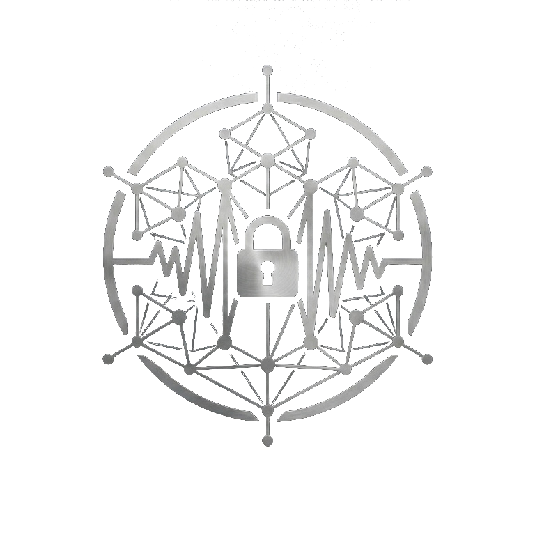

| 1 | Welcome to Silent Whisper |
| 2 | Getting Started |
| 3 | Organizations, Workspaces & Channels |
| 4 | Sending & Editing Messages |
| 5 | Threads, Direct Messages & Group DMs |
| 6 | Inline Tasks |
| 7 | Notifications & Presence |
| 8 | Search |
| 9 | Entities & the Knowledge Explorer |
| 10 | AI-Assisted Features |
| 11 | Your Account |
| 12 | Joining & Leaving |
| 13 | Good Practices & Current Limitations |
| 14 | Quick Reference & Glossary |
Silent Whisper is a private, workspace-based messaging platform built for teams who want a calm, considered place to communicate — without depending on the open internet, and without their conversations leaving a boundary they control. It brings together the everyday rhythm of channels and direct messages with a few quieter ideas: threads that stay tidy, tasks that live inside the conversation itself, a lightweight knowledge base that builds itself as you talk, and an assistant that summarizes rather than chats.
This guide covers everything you need as a member of a workspace — sending and editing messages, working with channels and direct messages, tracking tasks, exploring the entities your team references, searching your history, and using the built-in AI features. It does not cover administration of workspaces or organizations; if you manage a workspace, see the companion Administrator Guide.
Silent Whisper is deliberately restrained. It favors clarity and permanence over novelty — every message you send is meant to be something you're comfortable standing behind, and every feature is built to keep your attention on the conversation, not the interface.
Silent Whisper does not have open, public sign-up. Every account is created for you — either directly by an administrator, or through an invitation you redeem. You'll receive your account, or an invitation to join a specific workspace, through one of two paths:
Sign in with the username and password your administrator gave you — usernames aren't case-sensitive at login, so it doesn't matter whether you type, or autocapitalize, it differently than it was created. If you ever forget your password, Silent Whisper does not offer a self-service email reset — ask a workspace administrator or your system administrator to reset it for you.
Your display name is how you appear to teammates throughout the app. You can update it at any time from your account settings without needing anyone's approval.
Silent Whisper offers Light, Dark, and System-matched appearance themes. This is purely a personal preference and can be changed at any time; it has no effect on what others see.
Silent Whisper is organized in three layers. Understanding them makes it much easier to find your way around: an Organization is the outermost boundary, typically one per company or institution; a Workspace is a team or project space inside it, your day-to-day home; a Channel is a topic or team room inside a workspace, public or private; and a Direct or Group Message is a private conversation between specific people, outside any channel.
Workspaces that have been made discoverable will appear in a browsable list, which you can search and request to join yourself. Workspaces that are kept private require someone already inside — typically an owner or manager — to invite you.
Within a workspace, channels come in two flavors: public channels can be joined by any member of the workspace at any time, no invitation needed. Private channels are visible only to their members; joining requires an existing member to add you. If you're not a member of a private channel, Silent Whisper won't even reveal that it exists to you — this is intentional, and protects sensitive conversations from being discovered by people who aren't part of them.
Any member of a channel can rename it, add other workspace members to it (if it's private), remove members, or leave — these are treated as ordinary participation, not special administrative power.
Messages support lightweight markdown, recognized automatically as you type: **bold**, *italic*, and ***bold-italic***, plus ==highlighted text== for something that should jump out. Markdown-style [label](url) links and plain https:// addresses both become clickable. Formatting is kept intentionally simple — the emphasis is on writing clearly, not decorating.
The composer grows with you: press Shift+Enter to start a new line without sending, and Enter to send when you're ready. It expands to fit roughly six lines before scrolling internally, in both the main composer and a thread reply.
Type @ followed by a name to mention a teammate. As you type, Silent Whisper suggests matching members so you can pick the right person quickly — this works the same way in a thread reply as it does in the main channel. A mentioned person receives a notification even if they're not currently looking at the channel.
Typing a name or term inside double brackets — for example [[Project Meridian]] — creates a reference to a shared, workspace-wide entity. As you type inside the brackets, Silent Whisper suggests existing entities so your team converges on the same names for the same things over time. Chapter 9 covers what you can do once you're on an entity's page: editing its details, tracking relationships to other entities, and generating an AI summary of everything your team knows about it.
You can edit your own message for 15 minutes after sending it — look for the Edit action on any message that's yours. Past that window the action is still offered, but saving will tell you plainly that the window has closed rather than silently failing.
Every edit is kept, never overwritten in place: click the (edited) tag that appears next to an edited message to expand its full revision history, oldest version first. Anyone in the conversation can see it — there's no quiet rewriting of what you said.
Messages still can't be deleted, and no one — not even a workspace owner or system administrator — can edit a message on another person's behalf. Read a message over before sending it; editing is for fixing a typo or an unclear line minutes later, not for erasing something you said.
Reply to any message to start a thread, keeping a side discussion attached to its original context instead of scattering it down the main channel. Threads in Silent Whisper are intentionally flat — you can reply to a message, but you can't reply to a reply. This keeps side conversations easy to scan rather than turning into their own nested maze.
Start a private, one-to-one conversation with any teammate you share a workspace with. Direct messages sit outside any channel and are only ever visible to the two people in them.
For a private conversation with more than one other person, start a group direct message. Group DMs support up to 20 participants and, unlike a one-to-one DM, a new group is created each time rather than reusing an older one — useful when you want a clean, distinct thread of conversation with a particular set of people.
A direct message or group DM you haven't touched in a while quietly drops out of your DM list — never deleted, and unaffected on anyone else's side. By default that happens after 90 days without a new message; you can change your own threshold, or turn it off entirely with 0, from Your Account (Chapter 11). A new message brings a dormant conversation right back with no manual restore step.
Silent Whisper lets you turn an ordinary message into an action item without leaving the conversation or reaching for a separate tool. Anywhere in a message, write a line like:
- [ ] Draft the quarterly summary [owner:: @jordan]
This is recognized as a task the moment the message is sent — no AI involved, just a consistent, predictable pattern you can rely on. The checkbox can be ticked off by anyone with access to that conversation, and it updates live everywhere it's shown — in the channel, in the thread, and on the workspace's Task Dashboard.
Every workspace has a Task Dashboard that gathers open and completed items across your conversations, split into two views:
You're notified when you're mentioned and when you receive an invitation — to a workspace or to a specific channel. A running notification summary keeps count of what you haven't yet seen, and you can mark individual notifications, or all of them, as read.
Teammates appear as Online, Away, or Offline. This status is derived by the server from your actual connection, not from anything your device reports about itself — so it stays honest even if a device's clock or settings are off.
Silent Whisper's search understands meaning, not just matching words. Rather than requiring the exact phrase someone used, you can search for the idea you remember — for example, searching "who's covering the release" can surface a message that never used any of those exact words, if it's discussing the same thing.
Search only ever looks across channels you're actually a member of. Because it works conceptually, results can take a short time to catch up on very recently sent messages — if something you just sent doesn't appear immediately, give it a moment.
Search in plain, natural phrases the way you'd describe the topic to a colleague, rather than trying to guess the exact wording of the original message.
Every [[double-bracket]] reference points to a shared entity page — a workspace-wide record of a person, project, or term that accumulates context every time someone mentions it. This chapter covers what lives on that page, and how to find what's trending across a workspace.
Any workspace member can open an entity's page and fill in its description, set a status (Active, Deprecated, or Archived), assign an owner from the workspace, and add free-form tags or a reference URL. Aliases — alternate names that resolve to the same entity — are shown on the page but aren't editable from this form.
Entities can be connected to each other using a small, fixed vocabulary: Depends on, Owned by, Related to, Blocks, and Part of. A relationship you add from one entity's page shows up from the other side too.
Click Generate summary on an entity's page to have the AI assistant read every reference to it that you personally have access to and produce a short summary, citing how many references it drew from. Click Regenerate summary any time to fold in newer context. Only the reader's own accessible channels are ever used, so a summary never surfaces something you couldn't otherwise see.
The compass icon in a workspace's sidebar opens the Knowledge Explorer: a Trending list of that workspace's most-referenced entities over the last 30 days. Opening an entity from this list also shows its Subject Matter Experts — the people who've referenced it most — and, next to each individual reference, a View context action that jumps straight to the message or thread it came from.
Trending, experts, and every reference list are all computed the same privacy-respecting way as search and AI summaries: an entity mentioned only in a channel you can't read never appears for you, not even as an uncredited count.
Silent Whisper includes a small set of focused, task-scoped AI features — not an open-ended chatbot. Each one takes real conversation content you already have access to and turns it into something faster to read. All processing happens through infrastructure your organization controls.
| Summarize Channel Available from a channel's AI actions menu. Produces a concise summary of recent activity, so you can catch up on a busy channel in seconds rather than scrolling. |
Extract Tasks Run on any thread to pull out a checklist of action items discussed in the conversation — useful after a long planning discussion that wasn't written with inline task syntax. |
| Catch Me Up A cross-channel digest, reachable from the sparkle icon beside your active workspace. It organizes what you've missed into Urgent Mentions, Action Items, Unresolved Questions, and Decisions Made. |
Semantic Search The same conceptual search described in Chapter 8. An entity's "What we know" summary (Chapter 9) draws on the same infrastructure, scoped to that one entity. |
These features share a limited processing queue. If it's busy, you'll see a "Queued" indicator with your position — this is normal and resolves quickly. If AI features are turned off for your organization, you'll see a clear message rather than a silent failure.
You can change your own password at any time from account settings, provided you know your current one. Doing so signs every other active session of yours out automatically, while keeping the device you're using signed in — a simple way to shut the door on any session you don't recognize.
Update how your name appears to others at any time — no approval required.
Switch between Light, Dark, and System themes whenever you like.
On the same panel, set how long an inactive DM or group DM stays in your list before quietly archiving — 90 days by default, or 0 to never archive. See Chapter 5 for what "archived" actually means.
Invitation links let you join a workspace directly. In-app invitations arrive as a notification you can accept or decline at your own pace.
You can leave any channel, workspace, or organization yourself at any time — there's no need to ask an administrator to remove you. A couple of sensible guardrails apply:
Silent Whisper is intentionally spare in places where many chat tools have become cluttered. Knowing what isn't there helps you work with the grain of the tool rather than against it:
Organization — The top-level boundary containing one or more workspaces.
Workspace — A team or project space within an organization, containing channels and members.
Channel — A topic-based room within a workspace; public (open to all workspace members) or private (invite-only and invisible to non-members).
Thread — A flat set of replies attached to a single message.
Direct Message (DM) — A private one-to-one conversation outside any channel; auto-archives from your list after 90 days idle by default.
Group Direct Message — A private conversation among several specific people (up to 20), outside any channel.
Entity reference [[Like This]] — A shared, workspace-wide tag linking every mention of a person, project, or term across the channels you can see, with its own editable page and AI summary.
Entity relationship — A typed connection between two entities: Depends on, Owned by, Related to, Blocks, or Part of.
Knowledge Explorer — The per-workspace panel (compass icon) showing trending entities and their Subject Matter Experts.
Inline task - [ ] ... [owner:: @name] — A checkbox action item embedded directly in a message, tracked on the workspace Task Dashboard.
(edited) tag — Appears on a message edited within its 15-minute window; click it to see the full revision history.
Presence — A teammate's live status: Online, Away, or Offline.
Semantic search — Search that matches by meaning rather than exact keywords.